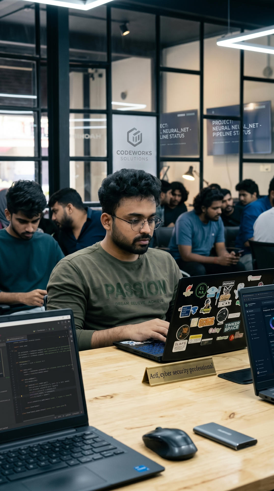

01 | Digital forensics
Blockchain-Based Forensic Evidence Security System
A digital-evidence project focused on tamper-evident integrity and transparent chain-of-custody workflows.
View repositoryI'm Mohammed Arif P, a CEH v12-certified security professional in Kerala, India. I help make application security findings understandable and actionable, and write practical learning resources for the next generation of defenders.

Recent projects span authorized security assessment, application security, and digital-evidence integrity.
A digital-evidence project focused on tamper-evident integrity and transparent chain-of-custody workflows.
View repositoryAn authorized-only assessment pipeline that coordinates reconnaissance and scanner stages, summarizes risk, and produces structured reports.
View repositoryA modular framework for controlled API security checks, evidence-based findings, and sanitized reports.
View repositoryMy work includes vulnerability assessment, penetration testing, finding validation, risk-focused reporting, and security education.
Read my career historyCompetitive Cracker Pvt. Ltd
Funtastic Sports Pvt. Ltd
Riss Technologies
Four books cover web application VAPT, cybersecurity and ethical-hacking foundations, and practical security engineering with Kali Linux.
Explore the publicationsAvailable for VAPT engagements, consulting, training, speaking, and collaboration.